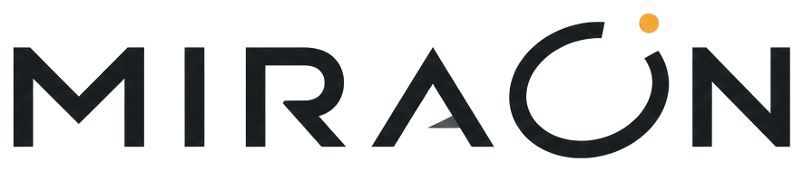

01 / Brand
브랜드의 기준을 만들다.
MIRAON의 시각 언어를 중심으로 CI, 캐릭터, 프로젝트 브랜드를 정리합니다.
01 / CI
MIRAON CI

Onyx / Porcelain을 기본으로, Solar Amber를 중요한 순간에만 사용합니다.
Onyx#171A1D
Porcelain#F7F6F2
Solar Amber#FFB547
02 / Character
CHARACTER / 모아(Moa)
부산 관광 SNS 크리에이터이자 여행 가이드 캐릭터.
세련되고 똑똑한 진행자처럼 보이지만, 가끔 프레임 밖으로 벗어나거나 먹방 촬영 전에 음식을 먼저 먹어버리는 작은 허당미가 있습니다. 성격 방향은 ‘관광 전문가 80% + 허당 20%’입니다.
- Personality
- Curious · Stylish · Friendly
- Use
- 인스타툰 · 릴스 썸네일 · 카드뉴스 · 이모티콘 · 굿즈
- Status
- 캐릭터 시트 구성 중

01Turnaround전·좌·우·후면 구성 예정
02Character sheet비율·의상·소품 정리 예정
03Expression감정·이모티콘 시트 예정
04Key pose관광 상황별 포즈 예정
05Photorealistic실사 스타일링 확장 예정
03 / Brand project
HAVEN
캐릭터와 무대, 팬 경험을 연결하는 가상 엔터테인먼트 프로젝트.
프로젝트 살펴보기 ↗